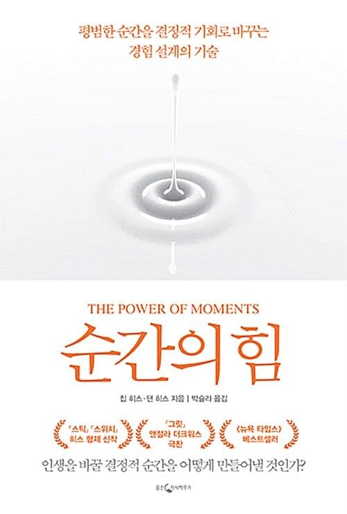

📖 순간의 힘

- 저자: 칩 히스, 댄 히스
- 출판사: 웅진지식하우스
- 상태: ✅ 완독
- 한 줄 요약: "평범한 순간을 결정적 기억으로 바꾸는 경험 설계의 기술"
내용 요약
- 사람의 인생을 바꾸는 건 거창한 사건이 아니라 '결정적 순간(defining moment)'이라는 통찰에서 출발한다.
- 결정적 순간을 만드는 네 가지 요소를 제시한다. 고양(Elevation), 통찰(Insight), 자부(Pride), 연결(Connection).
- 고양은 평범함을 깨고 감각을 깨우는 순간, 통찰은 생각을 바꾸는 깨달음의 순간, 자부는 성취를 인정받는 순간, 연결은 다른 사람과 이어지는 순간이다.
- 기업·학교·개인의 사례를 통해 이 네 요소를 의도적으로 설계하면 기억에 남는 경험을 만들 수 있다고 말한다.
- 『스위치』, 『스틱!』을 쓴 히스 형제의 대표작으로, 경험 설계와 자기계발을 잇는 책이다.
기억에 남는 구절
삶을 바꾸는 순간은 우연히 주어지는 것이 아니라, 네 가지 요소를 통해 의도적으로 설계할 수 있다.
별점
★★★★☆ (4/5)
읽은 시기: 2025.09~10 (지식포럼 독서 기록)
💬 댓글